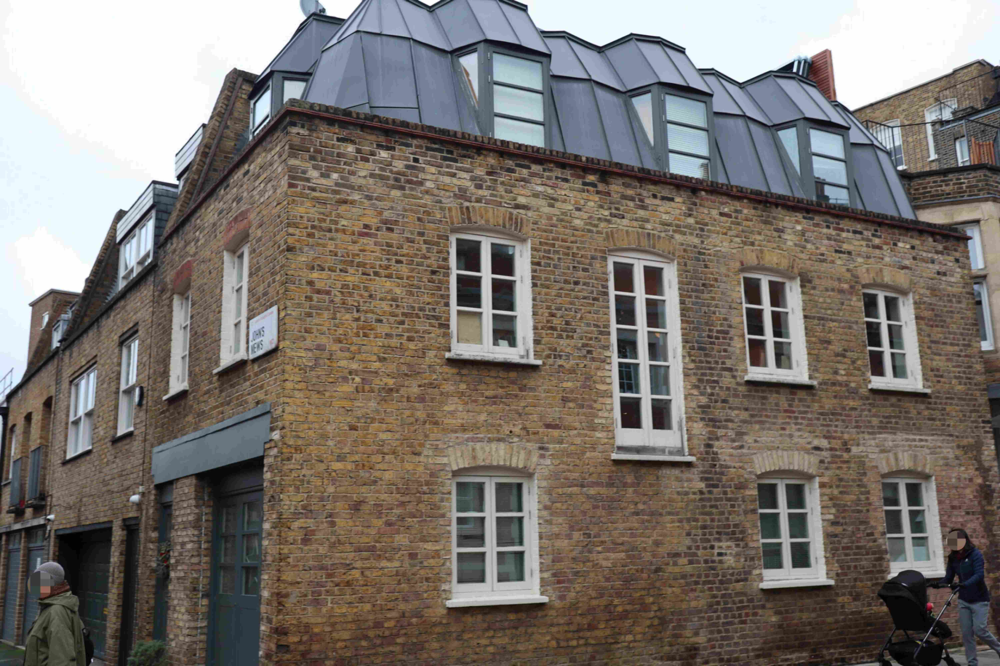
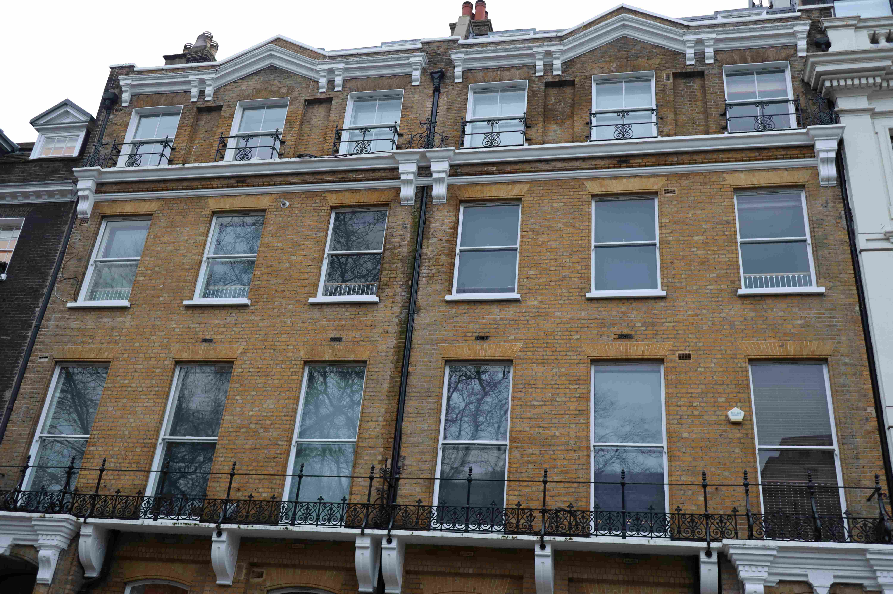

ü§ñ Zero-shot Classifier
A training-free classifier is proposed in this study to identify the age epochs of buildings using GPT-4 Vision. A series of command prompts is crafted to perform zero-sample classification directly using GPT-4 Vision. The predicted age epoch and descriptive reasoning process are output by the classifie. Please find the demo here.
Workflow
Prompt
*The GPT model is GPT-4 Vison Preview. The cost was $2.08 for 131 images.
üìä Result
The classifier finally resulted in 52 correct and 79 incorrect cases with 1 "hallucination" case. Although GPT-4 Vision performed slightly less well in detailed prediction with 39.69% accuracy, the Mean Absolute Error (MAE) was only 0.85 decade, which means most of the age epochs can be predicted successfully to be in adjacent but not far off age epochs.
Visual Result Gallery
Please click üëâ an image üëà to see the predicted result üåü.
ID: 38
Ground Truth: <1700
Predicted Result: 1860-1879
Reason: The building features architectural elements such as stucco-fronted facades and sash windows which are indicative of the Victorian era, particularly the period between 1860 and 1879 when such designs were commonplace in London housing.
ID: 91
Ground Truth: 1700-1749
Predicted Result: 1700-1749
Reason: The building exhibits features characteristic of Georgian architecture commonly found in London, such as the symmetrical arrangement of sash windows with glazing bars, red brick construction with contrasting white window headers and a parapet hiding the roof. These features were prevalent during the early to mid-18th century.
ID: 59
Ground Truth: 1750-1799
Predicted Result: 1750-1799
Reason: The building features Georgian architectural elements such as brickwork, sash windows, and a white stucco ground floor, typical of the late Georgian era which corresponds to the second half of the 18th century.
ID: 94
Ground Truth: 1800-1819
Predicted Result: 1900-1919
Reason: The building exhibits characteristics of London's Edwardian era with its red brickwork and white sash windows. While the brickwork could suggest a slightly earlier period, the overall style and sash windows are typical of the late Victorian to Edwardian period. The dormers look modern, suggesting renovation, but the main structure seems older.
ID: 42
Ground Truth: 1820-1839
Predicted Result: 1920-1939
Reason: The building features elements such as sash windows and a relatively plain facade, characteristic of British architecture styles prevalent during the period between the World Wars.
ID: 34
Ground Truth: 1840-1859
Predicted Result: 1820-1839
Reason: The building exhibits neoclassical architectural features, such as a portico with Ionic columns, a pediment, and stonework typical of the early 19th century. These characteristics are consistent with buildings constructed in the Regency period, which falls within the 1820-1839 age epoch.
ID: 128
Ground Truth: 1860-1879
Predicted Result: 1860-1879
Reason: The building in the image displays features typical of Victorian architecture, such as ornate ironwork, sash windows, and the use of London stock brickwork, which suggest that it was likely constructed during the Victorian era, between 1860 and 1879.
ID: 28
Ground Truth: 1880-1899
Predicted Result: 1880-1899
Reason: The building features characteristics of Victorian architecture, evident in its ornate stone carving, bay windows, iron railings on the balconies, and overall grand facade, which are typical of the late 19th century.
ID: 40
Ground Truth: 1900-1919
Predicted Result: 1880-1899
Reason: The building in the image features elements of Victorian architecture, which is common in London for structures built during the late 19th century, such as ornate brickwork, terracotta tiles, the presence of a turret, and the overall ornamental detail.
ID: 36
Ground Truth: 1920-1939
Predicted Result: 1900-1919
Reason: The building features red brickwork common in Edwardian architecture, a period that spanned from 1901 to 1910. The simplicity of design and industrial window styling also suggest a timeframe around the early 20th century, yet it lacks ornate detailing which became less common post-Victorian era, pointing towards the era of 1900-1919.
ID: 55
Ground Truth: 1940-1959
Predicted Result: 1940-1959
Reason: The building's architectural style suggests a post-war design common between the 1940s and 1950s in London, characterized by the streamlined, functional appearance and the use of stone cladding.
ID: 39
Ground Truth: 1960-1979
Predicted Result: 1973-1997
Reason: The building in the image appears to be the British Library in London, which was constructed between 1973 and 1997. The architectural style is indicative of the late 20th century, with its large, blocky form, red brickwork, and lack of ornamentation typical of the Brutalist style which was popular from the 1950s to the mid-1970s but with construction periods extending into the 1980s and 1990s for some Brutalist buildings.
ID: 65
Ground Truth: 1980-1999
Predicted Result: 1960-1979
Reason: The building exhibits design features typical of mid-20th-century architecture, such as a grid-like facade with repetitive patterns, large windows, and use of materials like concrete with a pebbled finish. These characteristics are commonly associated with the Brutalist movement and the modernist styles prevalent in the 1960s and 1970s.

ID: 12
Ground Truth: 2000-2019
Predicted Result: 2000-2019
Reason: The building in the image features a modern architectural design, with large glass windows, clean lines, and a contemporary façade which suggests it was constructed in the late 20th or early 21st century. This style is typical for residential buildings built during the 2000-2019 epoch.
ID: 62
Ground Truth: >2020
Predicted Result: 2000-2019
Reason: The building features a modern architectural design with a clean, linear facade, and extensive use of glass and uniform, possibly prefabricated, materials, which are indicative of the 21st-century architectural trends and building techniques. The presence of a contemporary shopfront logo also suggests a recent construction.
ID: Image ID in FI-London
Ground Truth: Actual building age epoch
Predicted Result: Predicted result from our proposed classifier
Reason: Descriptive reasoning process given by GPT-4
General Performance
Output Example
Evaluation Metrics
Normal Confusion Matrix
with one adjacent epoch
with two adjacent epochs
ü•∞ Acknowledgement
This zero-shot classifier is based on GPT-4 Vision by OpenAI. The Facade Image in London (FI-London) dataset is grounded in Colourring Cities Research Programme by the Alan Turing Institude and Colouring London by Hudson, P., et al. in 2018. We thank for their great works.
This work is supported by the Engineering and Physical Sciences Research Council through an industrial CASE studentship with Ordnance Survey. We sincerely thank Dr James Haworth (UCL) and Dr Stefano Cavazzi (OS) for their help.
üìÉ BibTeX
A preprint will be available soon.